Theory of Flight
Theory of flight studies the aerodynamics of a plane and explains how planes are able to generate lift and gain the ability to fly.
Four Major Forces
The four major forces acting on an aircraft are lift, drag, weight and trust.
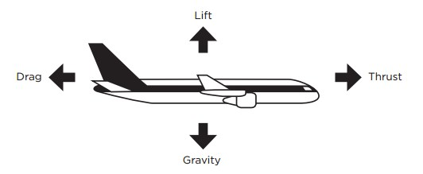
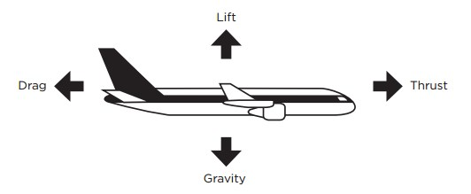
Axis of plane
A plane has three axis: the longitudinal, the lateral and the normal/vertical axis. Movement around the lateral axis is called pitch, movement around the longitudinal axis is called roll, and finally movement around the normal axis is called yaw. Roll is controlled with the ailerons, pitch is controlled with the elevator and yaw is controlled with the rudder. The pilot moves the ailerons by moving the control-stick from left to right, the rudder with the pedals and the elevator by moving the control-stick up and down.
 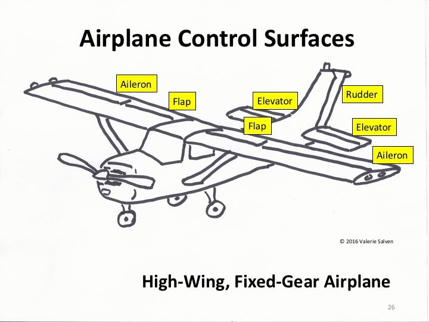
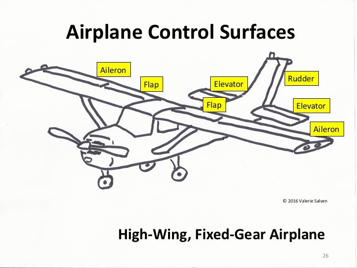
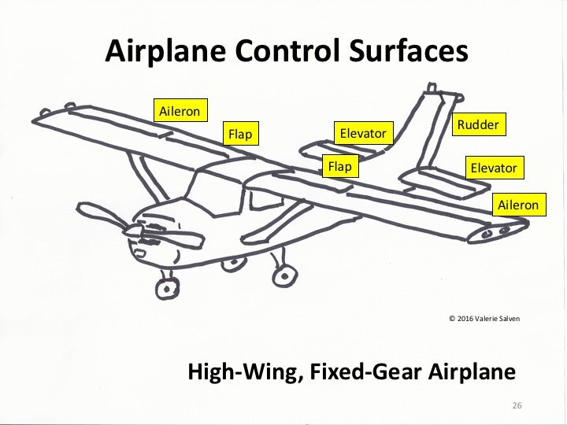
Angle of Attack and lift
The angle of attack is the angle between the chord of the plane and the relative wind. As the angle of attack increases, lift increases, until a critical angle of attack. Past the critical angle of attack the plane will stall as there is no more lift being produced on the wing.
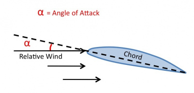
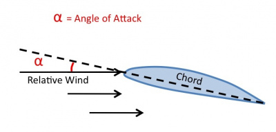
Airfoil and aerodynamics
There is a layer of laminar air flow and turbulent air flow on an airfoil at all times, the angle of attack determines how much laminar air flow flows around the airfoil and how much turbulent air flow is present. When the critical angle of attack is reached, all laminar air flow is replaced with turbulent air flow causing the aircraft to stall. Here is a simulation where you can see this effect for yourself.
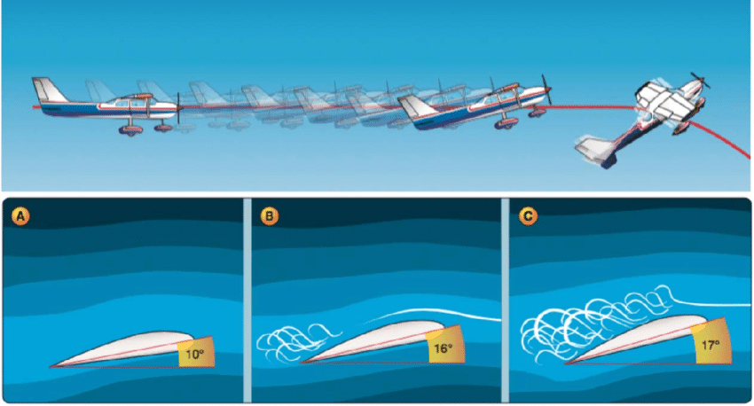
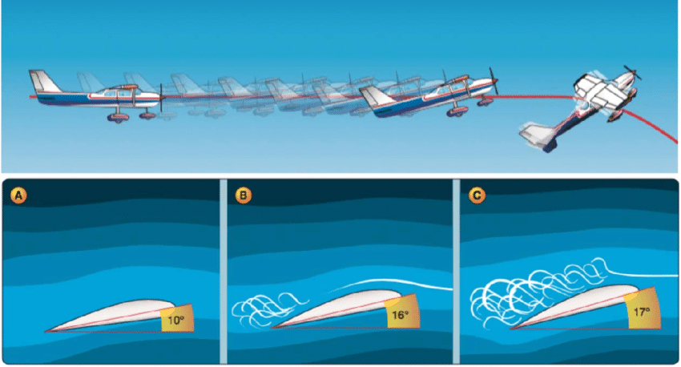
Bernoulli's principle
According to Bernoulli's principle air moving faster exerts less pressure than air moving slower. With the shape of an airfoil being curved at the top and flat at the bottom, air needs to travel faster on top of the airfoil in order to arrive at the trailing edge at the same time as air traveling under the airfoil, because it has a larger distance to cover. Because of the pressure difference, a force called lift is created when an airfoil travels through air.
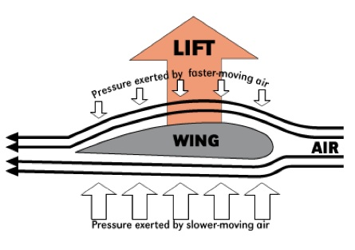
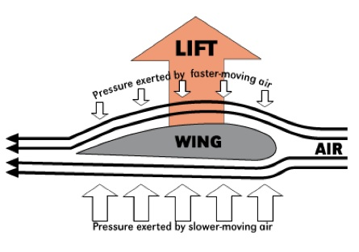
aerodynamics of a spin
When a plane is stalled on one wing, whilst still producing lift on the other wing, a spin occurs. During a spin, the plane is losing altitude and pitched downwards travelling at a constant speed while turning around an axis. To exit a spin, the pilot must apply rudder to the opposite direction of the spin and pitch the nose down in order to unstall the wings, then roll out of the turn to level the wings.
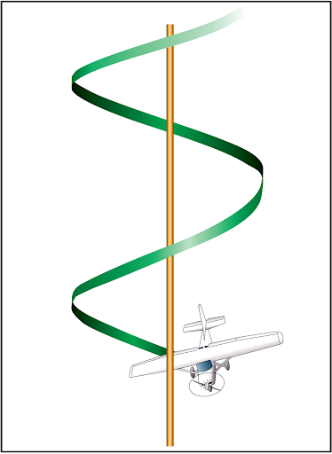
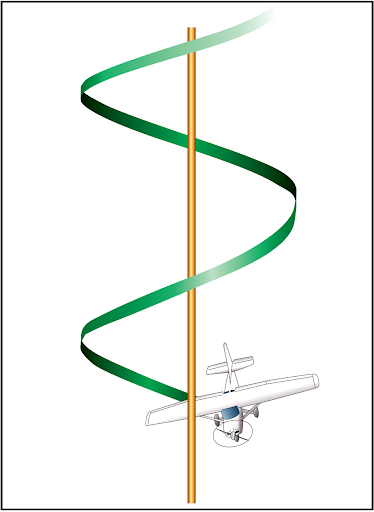